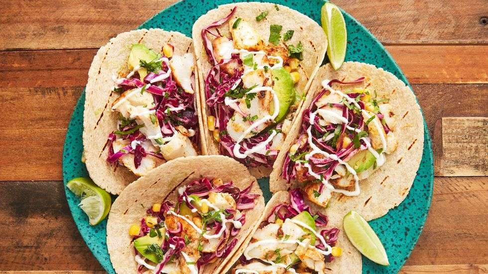

Easy Fish Tacos

Description
Super easy and delicious fish tacos with just a bit of spice.
Ingredients
Main Ingredients
- 3 tbsp extra virgin olive oil
- Juice of 1 lime
- 2 tsp chili powder
- 1 tsp paprika
- 1/2 tsp ground cumin
- 1/2 tsp cayenne pepper
- 1 1/2 pounds of cod ( or other flaky white fish)
- 1/2 tbsp vegetable Oil
- Salt & Pepper
- 8 corn tortillas
- 1 avocado - diced
Slaw Ingredients
- 1/4 cup mayonnaise
- juice of 1 lime
- 2 tbsp freshly chopped cilantro
- 1 tbsp honey
- 2 cup shredded purple cabbage
- 1 cup corn kernels
- 1 jalapeno - diced
Steps
- In a medium shallow bowl, whisk together the olive oil, lime juice, paprika, chili powder, cumin, and cayenne.
- Add cod and toss until evenly coated. Let marinate for 15 minutes.
- While the cod is marinating, work on the slaw. In a large bowl, whisk together mayonnaise, lime juice, cilantro, and honey. Stir in the cabbage, corn , and jalapeno. Season with salt and pepper.
- In a large nonstick skillet over med-high heat, heat the vegetable oil. Remove cod from marinade, season with salt and pepper, and add fish to pan. Cook until fish is opaque and cooked through, usually 3 - 5 minutes per side. Let fish rest for 5 minutes before flaking with a fork.
- Assemble the tacos: Serve fish over grilled tortillas with corn slaw and avocado. Squeeze lime juice on top and ganish with sour cream.